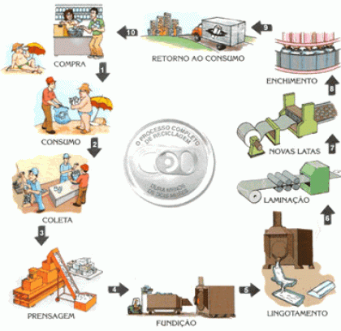

Reciclagem de Metal

Tipos de Reciclagem Sobre Metais
Aço
A reciclagem de aço é o reaproveitamento do aço utilizado em objetos que já não estão funcionando para produzir novos objetos.
O aço é utilizado em diversos materiais, desde latas até carros. Sua reciclagem é tão antiga quanto a própria história de sua utilização. O aço pode ser reciclado infinitas vezes, com custos menores e menos dispêndio de energia do que na sua criação inicial.
Ele pode ser separado de outros resíduos por diversos processos químico-industriais e voltar a ser utilizado sem perder suas características iniciais.
Alumínio
O alumínio é o terceiro elemento mais abundante no planeta que pode ser encontrado em diversos produtos de nosso dia a dia, porém, apesar de sua grande importância, possui uma recente escala industrial, já que passou a ser produzido comercialmente há apenas 150 anos.
Metal
O metal é caracterizado como mais denso que os outros metais, ou seja: os átomos ficam mais próximos uns dos outros. Um centímetro cúbico de um metal leve pesa aproximadamente 1,7 grama, enquanto a mesma medida de um metal pesado pode chegar a 6 gramas.
Introdução
O metal é um dos produtos mais utilizados nas tarefas do dia-a-dia. Encontramos embalagens de metais, fios e outros produtos metálicos em diversos produtos.
Ao ser descartado por pessoas e empresas, pode passar por um processo de reciclagem que garante seu reaproveitamento na produção do metal reciclado.
O metal reciclado tem praticamente todas as características do metal comum. Ele pode ser reciclado muitas vezes sem perder suas características e qualidade.
Conhecendo o Material:
A maioria dos metais que estão presentes no meio ambiente é natural. Porém, o descarte incorreto de resíduos urbanos e industriais, a poluição atmosférica e o uso de agrotóxicos têm feito com que elementos tóxicos contaminem o ambiente. Com o aumento da presença dessas substâncias no meio ambiente, aumenta também a preocupação com a possibilidade de sua disseminação, o que comprometeria o equilíbrio de todo o ecossistema.
É importante saber:
Os metais são amplamente usados em diversos equipamentos, embalagens e estruturas devido ao seu alto grau de resistência, durabilidade e facilidade de adequação. Por isso, a reciclagem é uma das formas mais sustentáveis de produzir e gerenciar esses materiais, em vez de descartar os itens no meio ambiente em forma de lixo, a reciclagem visa a processar os materiais para que possam ter utilidade novamente para as pessoas ou mesmo para a indústria. Eles podem vir a se tornar matéria-prima para a produção de novos produtos, sem prejudicar em nada o resultado final.
A reciclagem e a sustentabilidade andam juntas porque os metais são materiais que levam muito tempo para se decompor na natureza. Dependendo das condições do local de descarte, esses compostos podem levar centenas ou até milhares de anos para sumir. O alumínio, por exemplo, pode levar de 100 a 500 anos para desaparecer.
Classificação dos metais
- Elementos essenciais: sódio, potássio, cálcio, ferro, zinco, cobre, níquel e magnésio.
- Micro contaminantes ambientais: arsênico, chumbo, cádmio, mercúrio, alumínio, titânio, estanho e tungstênio.
- Elementos essenciais e simultaneamente micro contaminantes: cromo, zinco, ferro, cobalto, manganês e níquel.